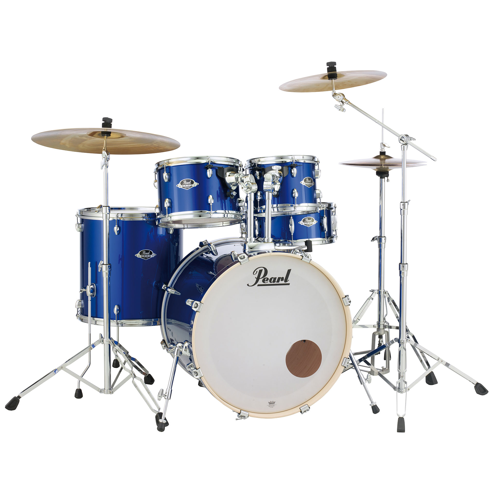
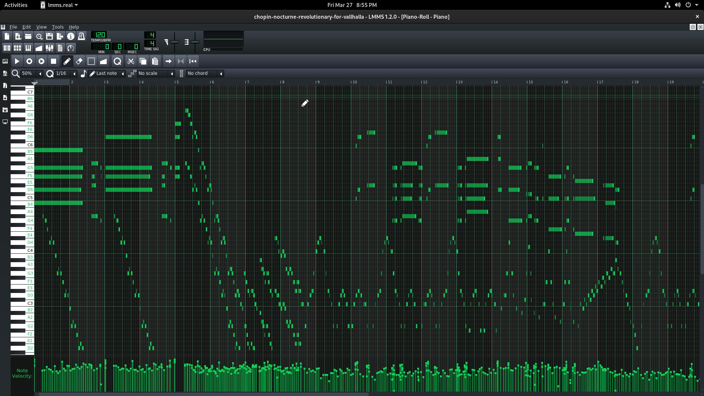

The Composer
Tuesday • November 26th 2019 • 10:18:56 pm
Quote by J.K. Rowling
"Ah, music," he said, wiping his eyes. "A magic beyond all we do here!"
-- J.K. Rowling - https://en.wikipedia.org/wiki/J.\_K.\_Rowling
Music & Language
You don't need to know musical notation.
Musical notation has been replaced by a SAVE BUTTON.
No, you do not need to know Musical Notation to read Chopin's Nocturnes,
either.
You just import the midi file into lmms, and gaze. He is not smarter than
you, he just sat at a piano making melodies, wrote them down arranged them
in a song, and became famous for having picked nice ones.
(Don't listen to people telling you that you can't become a World Famous
Maestro, because you don't know notes. They are just salty because they had
to learn them, and you don't.)
Like languages, music evolved to match our abilities. Everyone is a
composer. The rules are very simple.
Drums must be low and simple one or two keys. When making melodies don't
jump around, transition from one nearby key to another, they are grouped to
sound nice together. Break the rules from time to time.
Percussion Ensemble
Sounds on a Timeline
Visualize notes as bright little objects on a timeline.
Watch the melody.
Guitar Hero - Simpsons Theme Song
Melody & Song Structure
Look how keys go together, only when melody gets too boring, is there a
huge shift, a kind of a bridge, to get you to the next melody.
Notice the Intro, the song does not really start until Ralph Wiggum ends up
wearing Jebediah Springfield's Head as a hat.
Look how the song has quick melodies, followed by longer key presses, and
quick little melodies again. This way none of the parts get boring, and the
song keeps going.
Notice the Outro. The moment Matt Groening name is displayed, a new
variation pops up, and it is a melody that has a very nice closure at the
end. It does not seem to leave off unfinished, it hits those four final
notes in a sequence, and you know it is done, and done.
Musical Form
The Drum Kit
Drums do beat.
Beat is what your foot does when you like a song. There will be a rhythm
within a song almost always represented by a drum kit. A low deep sound
with some stuff happening behind it. That stuff behind it is the drum kit.
Listen, The Drum Kit, is just an instrument. If it was just the drums, it
would be like a piano with one key. There is more to drums, there are some
quick sharp sounding things that go along with it.
Play With Your Rhythm: Drum Patterns
The Drum Kit

In general the instrumental sounds that can be created here fall under four
basic categories.
Kick from A bass drum, or kick drum
Snare from the Snare Drum
Closed Hat & Open Hat from the Hi-hat
Clap, that's the sound that clapping your hands makes.
PROFESSIONAL Drum Programming Made EASY in LMMS!
How To Write A Melody On The Piano (For Beginners)
The Melody
It hurts my heart to say this lovely woman is doing something wrong.
As a Professional Pianist, she is brilliant, but as a teacher, she is a
Destroyer of Hopes.
Don't listen to a word she says.
Watch her hands.
She is using both of them.
Her left hand is creating low-frequency sounds, and she almost never does
anything there, and she keeps things simple. She is almost doing drums with
her left hand, she is laying down the beat.
Ignore her left hand, now.
Look at her right hand, at first she goes up and down. Then she does the
pinky & thumb, but still, even though she is playing notes apart, see it as
one note, pay attention to thumb only. She does jump between keys, but it
is rare and masked by her left hand that is doing the beat.
The keys she presses at the same time with her right hand should be seen as
one key, she is just mixing two sounds together to create a third sound.
When she presses two keys at the same time, she is adding a third key.
Why add keys to the piano. Because two keys at the same time sounds richer
than pressing one key.
Making a single sound out of pressing multiple keys at the same time, is
called making a chord. Chords are multiple notes played at the same time,
for the purpose of enriching the complexity of what you hear.
Left hand does the simple beat, it must always be simple.
Right hand does the melody, slowly goes up and down, in this particular
video chords aside, she only skips one key to get to the next note.
All of this is obscured, because she was taught Music Theory compatible
with Mozart & Chopin.
You are being taught to break out. Chords are beautiful for sure, but, you
just use the recording (the sound sample a .wav/mp3 of the chord) and focus
on composition.
Melodies are not made by learning how to play a piano. They are made in
LMMS by gently moving up and down.
Never Fear
You must never fear.
There are many theories.
Newton, went as far as saying that he made Calculus more complicated than
it should be, on purpose.
Chopin, would never dare to simplify his work.
But that won't stop me.
Chopin's Revolutionary Nocturne

Never Fear, Because You Are a Genius
You can see the same pattern in the video below, it is just rotated 90°
clockwise.
Chopin - Revolutionary Etude (Op. 10 No. 12)
Lead The Way
My Friends, My Readers, play.
Revolutionary Warriors. Lead The Way.
Let no one stand in it, may they face your wrath.
Make your own path.
Let no one play you like a piano key.
Be the change, you hope to see.